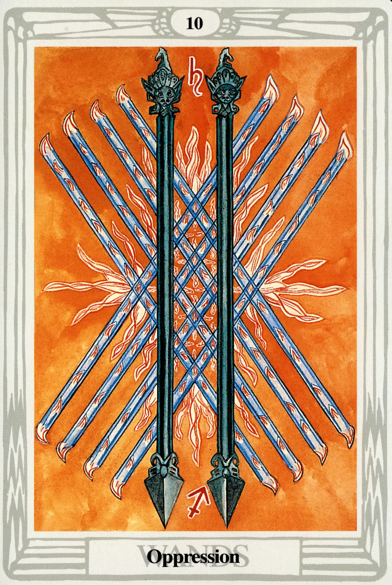

Wands
Ten of Wands
Oppression

(Saturn in Sagittarius)
20° to 30° Sagittarius
December 13 to December 21
Original Title: Lord of Oppression.
Golden Dawn Model: Four hands (two from each side of the card) appear from clouds; clasped in two pairs in the center with the grip of the First Order. They hold eight wands, crossed four with four. A fifth hand appears from the bottom center of the card holding a ninth and tenth wand upright, which cross the point of junction with the others. Flames flash where wands meet.
King Scale for Malkuth: Yellow.
The Four Scales for Saturn: Indigo; Black; Blue-black; Black, rayed Blue.
The Four Scales for Sagittarius: Blue; Yellow; Green; Dark vivid Blue.
Formula: 10 (Malkuth) of Wands (Atziluth) + Saturn in Sagittarius = OPPRESSION
All factors conspire to make this an altogether unpleasant card. Saturn's iron heel brutally pins poor Sagittarius (the lightest and most ethereal of the fire signs) to the floor of inflexible Malkuth. If zodiac signs could dream, the Ten of Wands would be Sagittarius's worst nightmare. Harris basically follows the Golden Dawn model with this card, and is meticulously faithful to the color scales. That, however, is where the similarities end. Her Ten of Wands is an explosive and suffocating image of oppression and repression.
Crowley writes that Malkuth, “depends from the other nine Sephiroth, but is not directly in communication with them. It is become a blind Force; so, the most violent form of that particular energy, without any modifying influences.” Blind force, Crowley points out, in the suit of Wands means “Fire in its most destructive aspect.”
Harris ingeniously illustrates this by transforming the two Dorjes (which in the Two of Wands were the symbols of celestial power) into dark iron prison bars. Crowley describes the card thus:
The whole picture suggests oppression and repression. It is a stupid and obstinate cruelty from which there is no escape. It is Will which has not understood anything beyond its dull purpose, its “lust of result”, and will devour itself in the conflagrations it has evoked.”